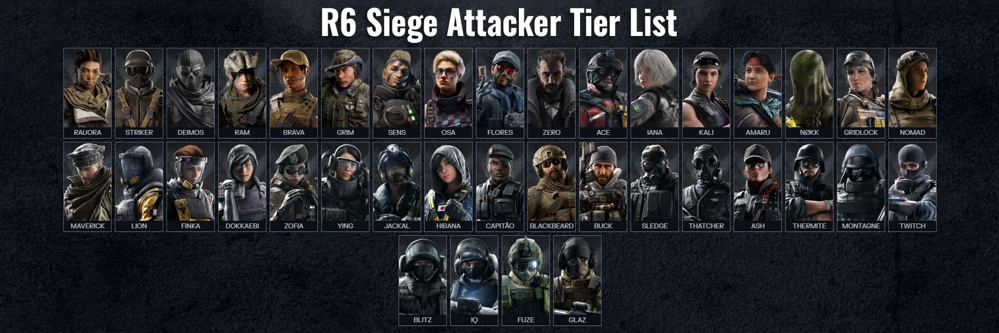
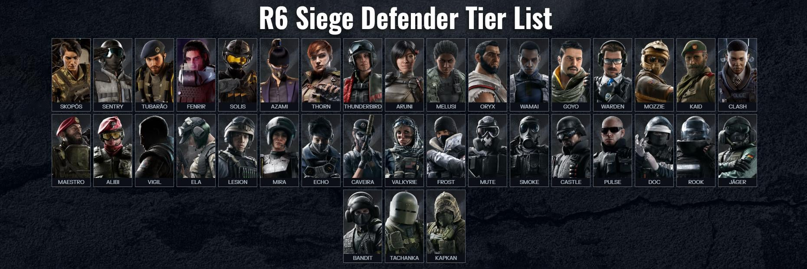

Het hart van Rainbow Six Siege wordt gevormd door de speelbare personages, beter bekend als
Operators. Er is een indrukwekkende selectie van tientallen unieke Operators verdeeld over de twee kampen: de
Aanvallers (Attackers) en de Verdedigers (Defenders). Elke Operator komt uit een andere internationale eenheid
(zoals de Britse SAS, de Amerikaanse FBI of het Nederlandse KCT) en beschikt over een eigen achtergrondverhaal
en specifieke vaardigheden.


Wat Operators zo bijzonder maakt, zijn hun unieke gadgets. Sommige Operators zijn ware experts in het
vernietigen van obstakels, zoals Thermite en zijn thermische ladingen die zelfs de dikste versterkte muren
kunnen doorbreken. Anderen richten zich juist op informatie en verdediging, zoals Valkyrie, die extra camera's
kan werpen om elke hoek van de map in de gaten te houden, of Jäger, die vijandelijke granaten in de lucht
onderschept.
Bovendien heeft elke Operator een eigen selectie aan primaire en secundaire wapens, variërend van zware
aanvalsgeweren en submachineguns tot shotguns en handwapens. Je kunt je loadout volledig afstemmen op jouw
speelstijl door scopes, lopen en grepen te bevestigen.
Het kiezen van de juiste Operator is cruciaal voor de strategie van je team. Soms heb je een specialist nodig om
vijandelijke vallen te neutraliseren, terwijl je in een andere ronde juist sterke barricades wilt doorbreken.
Door te experimenteren met verschillende combinaties ontdek je snel welke Operator het beste past bij jouw
tactische voorkeuren.